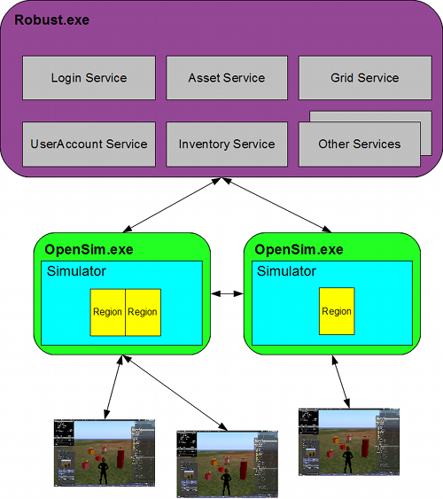
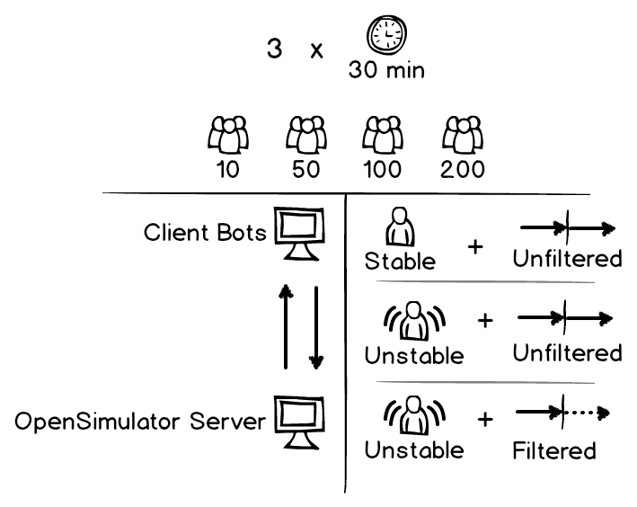
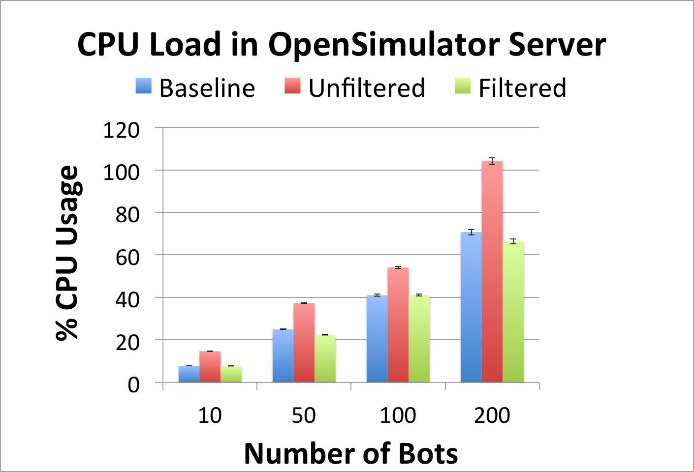
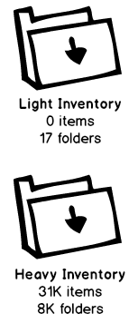
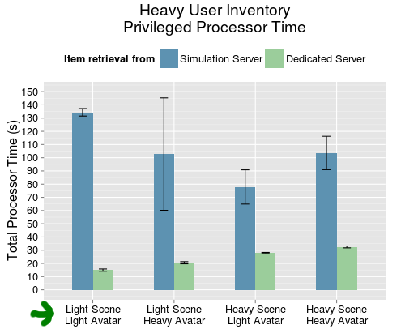
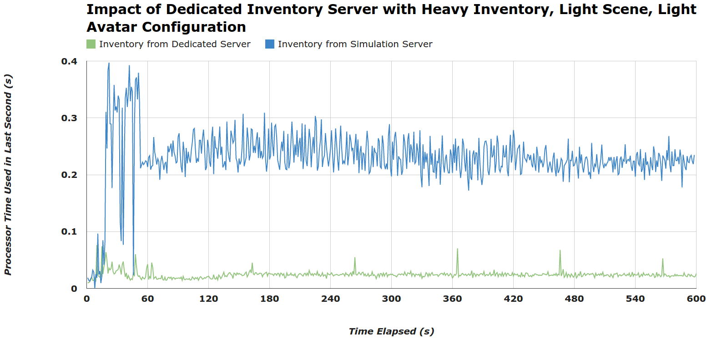

Measuring and Tuning Performance of
Virtual Environment Servers:
Experiments With OpenSimulator
Eugenia Gabrielova
University of California, Irvine


Virtual environments are online platforms where people can work, play, socialize, and build.


Why research virtual environments?
Despite growing demand, existing systems do not support vast, seamless virtual environments.
Scope: multi-user real-time virtual environments
- 3D virtual environment with many simultaneous users.
- Environment is accessed through client viewer application.
- User actions are immediately reflected in the environment and distributed to other users.
Many factors impact virtual environment performance.
- Real-time state updates
- Underlying hardware and network limitations
- Heterogeneous client viewer implementations
- Unpredictable user behavior
RQ-1. How can virtual environments mitigate unreasonable behavior from clients?
RQ-2. What part of the login procedure has the highest impact on server performance upon a user joining the environment?
Contribution of this work
- Experimental design for systematic performance studies of virtual environment servers
- Systematic study of unreasonable client behavior
- Systematic study of server performance impact upon user login.
- In practice, people don't have time to systematically assess performance
- Identifies situations in which clients behave unreasonably, and shows how to mitigate them
- In a large complex system, small code paths have huge impact
- Motivates the study of automated techniques for virtual environment performance measurement.
OpenSimulator is an open source 3D virtual environment server.

Agenda
- Experiment 1: Systematic study of unreasonable client behavior
- Experiment 2: Systematic study of server performance impact upon user login.
Experiment 1: Unreasonable client behavior in a virtual conference
Experiment 1: Unreasonable client behavior in a virtual conference
Logged in users asked to sit down, unreasonable client performance due to insignificant updates, ad hoc optimizationsExperiment 1: Experiment design
- Conference sceneario: users enter scene and sit down
- Drill down to performance impact of ad hoc performance optimization
- Use synthetic client bots framework
- Interesting configurations: baseline (stable, no filters), unfiltered (unstable, no filters), filtered (stable, filters)
Experiment 1: Exploring Client Behavior



Experiment 1: Exploring Client Behavior - Findings
Filtering insignificant updates from clients decreases OpenSim server load by at least 24%, returning performance to baseline levels.


Agenda
- Experiment 1: Systematic study of unreasonable client behavior
- Experiment 2: Systematic study of server performance impact upon user login.
Experiment 2: Exploring Performance Impact
of User Login
Goal: Understanding why the entrance of a user into a virtual environment is such a heavy process.
Experiment 2: Exploring Performance Impact
of User Login
| Stage 1: |  |
Stage 2: |  |
|
 |
 |
 |  |
 |
Experiment 2: Exploring Performance Impact
of User Login - Findings
Moving inventory retrieval to dedicated server reduced baseline performance during login by 14%. For users with heavy inventory, server loads decreased by 63.9% - 88.9%.
Experiment 2: Exploring Performance Impact
of User Login - Findings
Moving inventory retrieval to dedicated server reduced baseline login performance by 14%.For users with heavy inventories, server loads decreased by 63.9% - 88.9%.


Future Work
Conclusions
- Automated techniques needed to address manual overhead of virtual environment performance measurement.
- Virtual environment servers must mitigate performance issues that result from unreasonable client behavior.